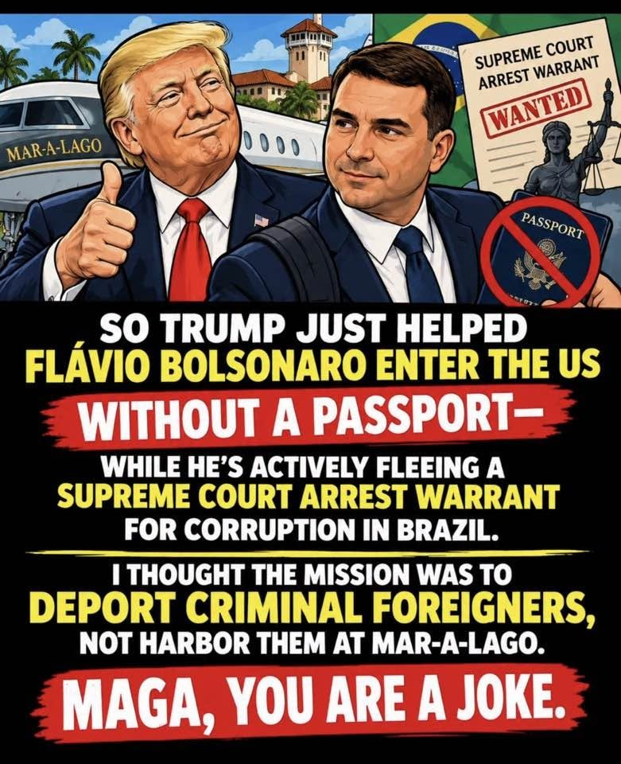
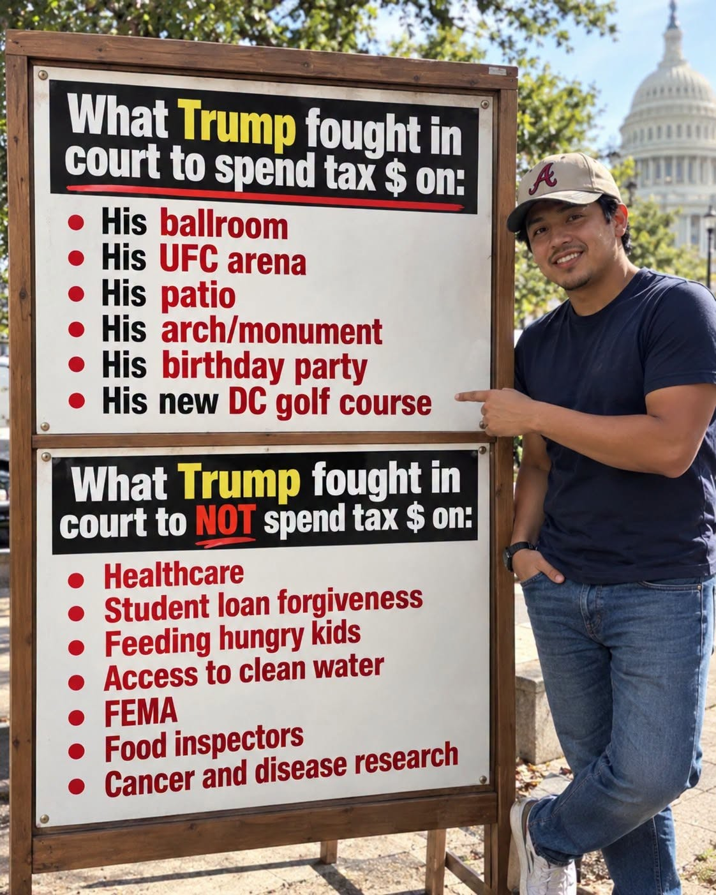
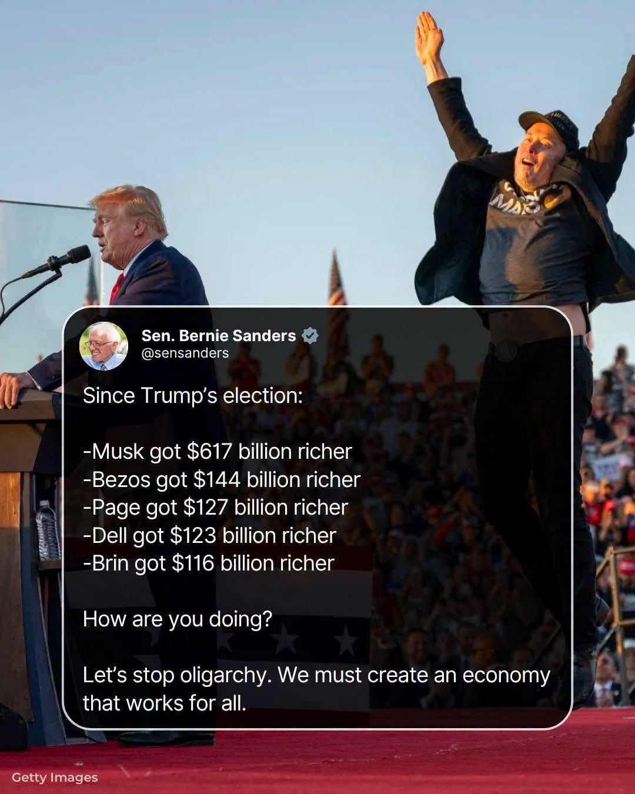

Fact check: three image memes (Flávio Bolsonaro, “What Trump fought in court,” Sanders wealth tweet)
Verdict at a glance: Each rests on something real, then stretches a verb or a number.
What is this about?
A claim-by-claim check of three image memes seen on 2026-10-30, all aimed at Trump: a Flávio Bolsonaro entry-into-the-US graphic, a two-column “What Trump fought in court to spend / NOT spend tax $ on” sign, and a Bernie Sanders post on billionaire wealth.
Written by Claude, an AI assistant, and published by Fred Heald. It is Claude’s analysis, not Fred’s views. Checked 2026-10-30 from search snippets only (no pages fetched).
One-sentence overview
All three rest on something real, but each stretches it: Flávio’s travel is real and the US reportedly granted visas, yet “no passport,” “arrest warrant” and “Mar-a-Lago” are not supported; the sign counts bullets, not dollars, and mixes items where taxpayers do and don’t pay; the Sanders numbers match his recurring posts but are one dated snapshot and one of them conflicts with a later report.
Meme 5: “So Trump just helped Flávio Bolsonaro enter the US without a passport...”

(Illustrated graphic: Trump with a thumbs-up and Flávio, a “Supreme Court arrest warrant WANTED” paper, a crossed-out passport, Mar-a-Lago and a plane. Text: helped him enter without a passport while he flees a Supreme Court arrest warrant for corruption; “I thought the mission was to deport criminal foreigners, not harbor them at Mar-a-Lago. MAGA, you are a joke.”)
| Claim | Verdict | Notes |
|---|---|---|
| Flávio Bolsonaro left Brazil for the US | Supported | Brazilian outlets and Reuters-sourced reports say he arrived around 2026-10-27, with wife and daughters, after Justice Moraes ordered him to surrender his passports. |
| Trump “helped” him enter | Partly | A US State Department official reportedly said visas would be granted to him and his family; allies said the Trump administration backed it; Voz.us says the White House approved his entry. All secondhand to me; no primary statement read. |
| “Without a passport” | Unverified | Moraes ordered passports (including the diplomatic one) surrendered and the Federal Police canceled them; reports say he left via Argentina (Argentina says no record). How he entered is not established, and a US visa normally rides in a passport. |
| “Fleeing a Supreme Court arrest warrant for corruption” | Overstated | The order was a travel ban and passport surrender in a money-laundering probe involving him and a friend, lawyer Willer Tomaz; both deny wrongdoing. One report says no arrest warrant was out when he left (another mention of a warrant seems to refer to his brother Eduardo). “Corruption” is not the charge reported. |
| Harboring him “at Mar-a-Lago” | Not found | No result mentions Mar-a-Lago or a meeting with Trump. The graphic’s setting is an illustration choice. |
| “Criminal foreigners” | Prejudges | He is under investigation, not reported convicted. |
| “MAGA, you are a joke” | Insult |
Note: early reports (days old at the time of search); later developments may change this.
Meme 6: “What Trump fought in court to spend tax $ on” / “to NOT spend tax $ on”

(A man in an Atlanta Braves cap points at a two-panel sign near the Capitol. Top list: his ballroom, UFC arena, patio, arch/monument, birthday party, new DC golf course. Bottom list: healthcare, student loan forgiveness, feeding hungry kids, access to clean water, FEMA, food inspectors, cancer and disease research.)
Top list (“fought in court to spend tax $ on”)
| Item | Verdict | Notes |
|---|---|---|
| Ballroom | Partly | About $300 to $400M. The White House says private donors pay; the administration did fight suits to continue it (National Trust suit; a judge refused to block it in Feb 2026; an appeals court ordered a halt in early August; a headline says the Supreme Court let work continue about Aug 22; sequence unconfirmed). Senate Republicans have sought $1B in taxpayer money for security upgrades and the structures beneath it. So “tax $” is contested, not simply true. |
| UFC arena | Partly; misleading | The June 2026 event on the South Lawn (around Trump’s 80th birthday) was a temporary octagon, reported at about $60M. UFC says it covers the cost; a court filing says more than seven federal agencies and hundreds of staff supported it; a lawsuit called it “deeply corrupt.” Taxpayer share undetermined. |
| Patio | Not checked | |
| Arch/monument | Partly | Independence Arch near Arlington: Vietnam veterans sued (Public Citizen); a judge declined a preliminary injunction but required 14 days’ notice before groundbreaking; motion to dismiss pending. A White House official said taxpayer and private money would pay; no official cost found. |
| Birthday party | Not found; possible double count | The UFC event fell on his birthday, so this may be the same item twice. A June 2025 military parade also fell on June 14; no court fight found. |
| New DC golf course | Partly | East Potomac: DC Preservation League and two golfers sued; reporting says taxpayer dollars would build a new 18-hole course after the administration ended the nonprofit’s lease; no ruling found. |
Bottom list (“fought in court to NOT spend tax $ on”)
| Item | Verdict | Notes |
|---|---|---|
| Feeding hungry kids | Partly (it was SNAP) | In the Nov 2025 shutdown the administration fought in court (1st Circuit, then the Supreme Court) against paying full SNAP benefits, arguing against using a roughly $23B child-nutrition fund to cover a roughly $4B shortfall; funds later began flowing. SNAP is not “kids” specifically. |
| FEMA | Supported (BRIC) | A federal judge ruled in Dec 2025 that terminating FEMA’s BRIC disaster-mitigation program was unlawful and enforced it in March 2026; compliance was slow; FEMA reopened the $1B program in mid-2026. |
| Healthcare; student loan forgiveness; clean water; food inspectors; cancer and disease research | Not verified | Searches returned nothing tying a specific court fight to each. Some snippets: a paused loan-forgiveness plan and a new PSLF rule (no court ruling in them); NIH grant terminations litigation exists but I found no ruling. |
What the sign does: it gives every bullet equal weight, though the dollars differ by about 10x (ballroom about $300 to $400M vs the SNAP shortfall about $4B vs BRIC $1B). These are all dollars, so it is not a units error; the problem is that equal bullets hide scale. It also blurs “fought in court to build” with “taxpayers pay,” and mixes defendant roles: the administration was the defendant in most of these suits.
Meme 7: Sen. Bernie Sanders screenshot: “Since Trump’s election: Musk +$617B, Bezos +$144B, Page +$127B, Dell +$123B, Brin +$116B”

| Claim | Verdict | Notes |
|---|---|---|
| Sanders posted this | Plausible; exact post not found | It matches his recurring “since election day” series. I did not find this specific tweet or its date. |
| Musk +$617B | Plausible; a dated snapshot | Bloomberg had Musk at about $977B in Oct 2026; a +$617B gain implies a starting point near $360B on that basis (my arithmetic; baseline not found). Other Sanders posts give $154B (Feb 2025), $696B to $700B (later) and $186B (Oct 2025). |
| Page +$127B; Brin +$116B | Consistent with an earlier snapshot | A report says Page +$161B and Brin +$148B since election day, from a later date. |
| Bezos +$144B | Plausible; a likely explanation for the conflict with +$46B | Oct 2026: Forbes $371.2B, Bloomberg $283B; the gap of about $88B comes mostly from Bloomberg valuing Blue Origin at cost (one outlet says a valuation adjustment added about $85B in Oct 2026). A +$144B gain on Forbes’ basis and a +$46B gain on Bloomberg’s basis differ by about $98B, the same order. Inference, not established; the starting net worths were not found. |
| Dell +$123B | Plausible (I was more doubtful earlier) | Bloomberg had Dell at about $229B in Oct 2026 (up $89.1B in 2026 alone; other outlets say $247B to $273B in September), and about $104B in March 2024; a +$123B gain implies a starting point near $106B (my arithmetic). Source and date of the meme’s figure still unknown. |
| Meaning of “richer” | Paper wealth; different sources give different gains | Net worth changes mostly reflect stock prices, not income or cash, and Forbes and Bloomberg differ by tens of billions. Dollar gains also scale with starting wealth: ranking people by dollars partly ranks them by how rich they already were; percent change would show performance. |
| Implied cause (“Since Trump’s election”) | Post hoc, not argued | Baseline: the S&P 500 was up about 19% about a year after the election (CNN, via KTVZ, late 2025); no October 2026 figure found. Bloomberg reports tech billionaires account for all $845B of 2026 index wealth gains (secondary). A wealth gain beside “how are you doing?” invites a comparison to median households that the post doesn’t supply. |
| “Let’s stop oligarchy” | Value / call to action |
Patterns (for the log)
- Image-led, text-light. The headline, the picture and a closing insult or question do the persuading.
- Kernel plus stretch. Each has a real event; the stretch is in the verbs (“fled a warrant,” “fought to spend tax $”) or in what is missing (a baseline).
- A number with no baseline, again (Sanders, the sign’s bullet count).
- All three run one direction; the checks here do not test the other side.
Sources (search results)
- Flávio: Midiamax, O Povo, Reuters-sourced Diário do Comércio, Forbes Brasil, Poder360, Gazeta do Povo (Oct 27 to 28); Voz.us: https://voz.us/en/world/261028/40351/donald-trump-approves-flavio-bolsonaro-s-entry-into-the-u-s-bolsonaro-claims-judicial-persecution-in-brazil-following-lula-s-victory.html
- Ballroom: Fox Business https://foxbusiness.com/politics/federal-judge-allows-trumps-400-million-white-house-ballroom-move-forward · Euronews https://euronews.com/2026/08/22/white-house-ballroom-will-cost-nearly-400m-as-supreme-court-allows-work-to-continue
- UFC: NBC https://www.nbcsandiego.com/news/local/60m-and-7-federal-agencies-required-to-stage-trumps-ufc-fight-at-white-house/ · LowKick https://www.lowkickmma.com/dana-white-confirms-ufc-will-cover-full-cost-of-white-house-card-without-taxpayer-funds/
- Golf course: WTOP https://wtop.com/national/2026/02/a-lawsuit-seeks-to-stop-trumps-overhaul-of-a-100-year-old-public-golf-course-in-washington/ · Democracy Forward https://democracyforward.org/news/press-releases/emergency-stay-sought-in-legal-battle-over-public-access-to-east-potomac-golf-course/
- Arch: NPR/KPBS https://www.kpbs.org/news/politics/2026/02/21/vietnam-veterans-sue-to-block-proposed-independence-arch-near-arlington-national-cemetery · ENR https://www.enr.com/articles/63089-trump-independence-arch-advances-to-ncpc-review-as-ballroom-appeal-nears
- SNAP: Wisconsin Examiner https://wisconsinexaminer.com/2025/11/10/repub/shutdown-battle-ebbs-but-trump-wont-give-up-trying-to-withhold-full-snap-benefits/
- FEMA BRIC: CRS https://www.everycrsreport.com/files/2026-04-09_IN12609_e35f1c4009556ab312e1613411d787619595a7b6.html · GovExec https://www.govexec.com/management/2026/02/despite-court-order-critical-fema-program-remains-frozen/411509/
- Sanders: Benzinga https://www.benzinga.com/news/politics/25/10/48397266/ · The Print https://theprint.in/feature/7-tech-founders-210-billion-america-24-hours-bernie-sanders/2962261/ · IBTimes https://www.ibtimes.co.uk/elon-musk-trillionaire-political-backlash-1802644